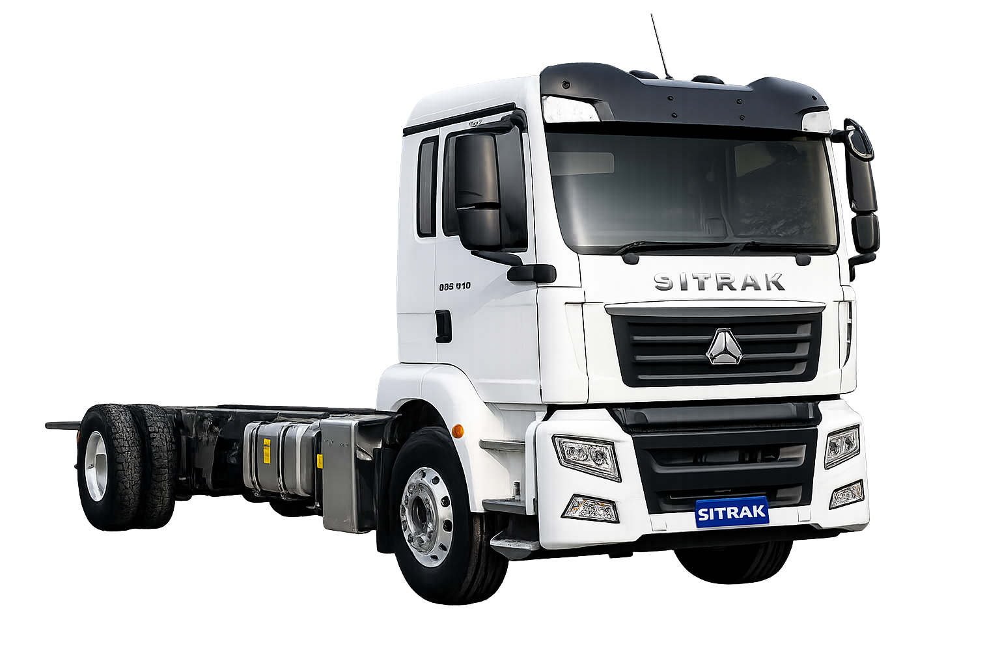

Cargo Cab & Chassis
SITRAK-G5S 4x2
A compact G5 cargo platform for operators planning lighter rigid body applications, local delivery work and efficient city access.
Configuration4x2
ApplicationCargo
SeriesG5S
Rigid bodiesMetro deliveryBody-builder ready